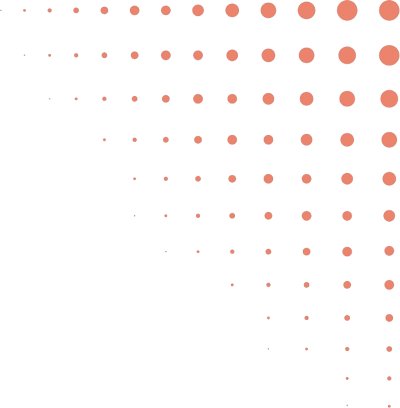
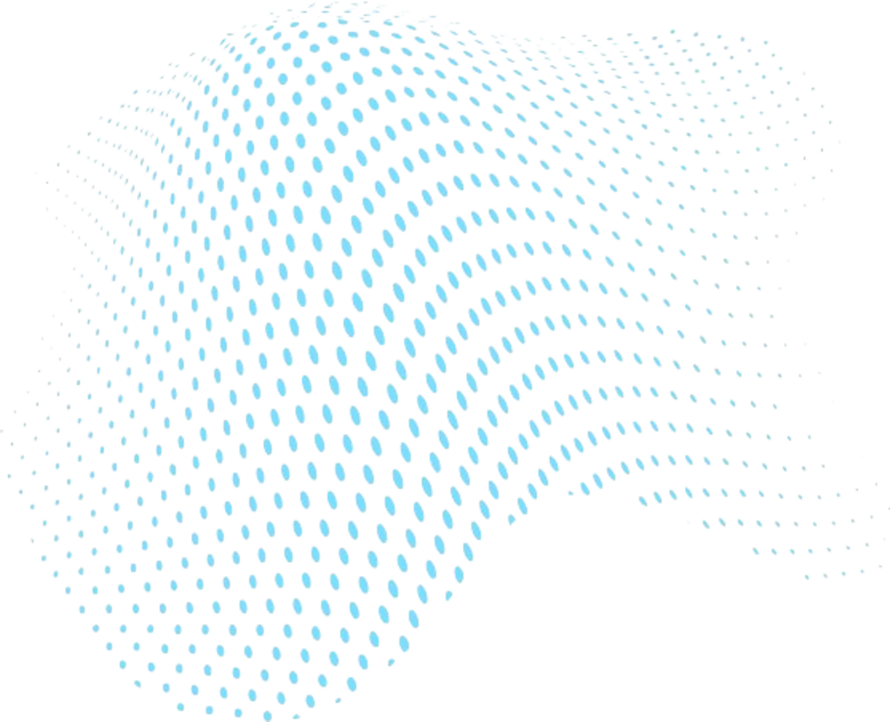

Statistical Science for a Better World
vISIon
The Magazine of
The International Statistical Institute
Accessible, rigorous writing on pressing societal issues, seen through a data lens. Every issue centres on one UN Sustainable Development Goal and gathers voices from across the ISI's seven associations.
Current issue
June 2026 · Vol. 1 No. 2
Data for a fairer world
SDG 10: Reduced Inequalities. Who counts, and who is counted.
Inequalities that go unmeasured go unaddressed. This issue asks what statisticians owe to the people behind the numbers: how race is recorded in official statistics, how communities can shape the research that describes them, and how machine learning is being turned on corporate supply chains.
- AI against modern slavery (AIMS) — building an open foundation for assessing corporate accountability at scale, by Adriana Eufrosina Bora.
- Beyond the data — how community-engaged statistics and data science transforms research on social issues.
- Why some countries measure race, and others refuse — Jonathan Auerbach on classification, mismeasurement and injustice.
- An interview with Tony Labillois — on official statistics, accessibility, and the responsibility of data.
and four more, across featured articles, teaching, software and country spotlight.
Sections
Inside every issue
Editorial
A word from the ISI President and the Editor-in-Chief on the theme of the issue.
Featured articles
Longer pieces that put a statistical method to work on a societal question.
Teaching
Classroom-ready ideas, data sources and lesson designs for statistical literacy.
Official statistics
What national statistical offices measure, how they measure it, and why it matters.
Software
Tools and packages that make analysis reproducible, and the design decisions behind them.
Interviews
Conversations with the people who shape statistical practice and policy.
Country spotlight
A close look at the data, and the statistical community, of one country.
Community corner
Awards, new members, webinars, conferences and calls from across the ISI.
Have an idea for an article?
Pitches, letters and article proposals are welcome from every corner of the ISI community, and from outside it.
About the magazine
A magazine by the members, for the members
vISIon is an initiative of the International Statistical Institute. It is built on the society's values of professionalism, truthfulness, integrity and respect, and it bridges academia, national statistical offices and industry.
Each issue revolves around a single UN Sustainable Development Goal and invites contributions from across the ISI family: methods and applications, successes and lessons learned, debates and design choices. Articles are written so that an educated reader, not necessarily a professional statistician, can follow the argument and judge the evidence.
"vISIon is a blank slate: let's build it together."